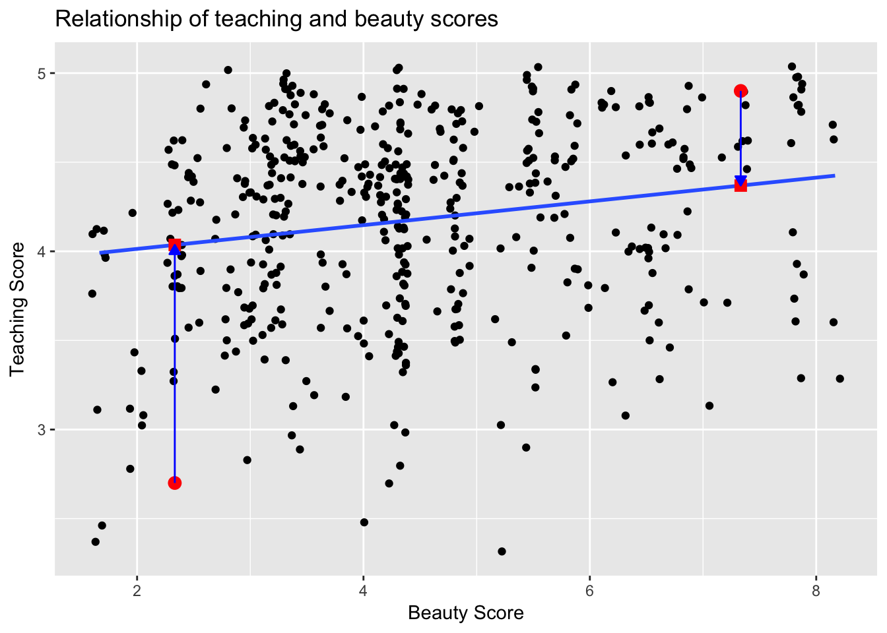
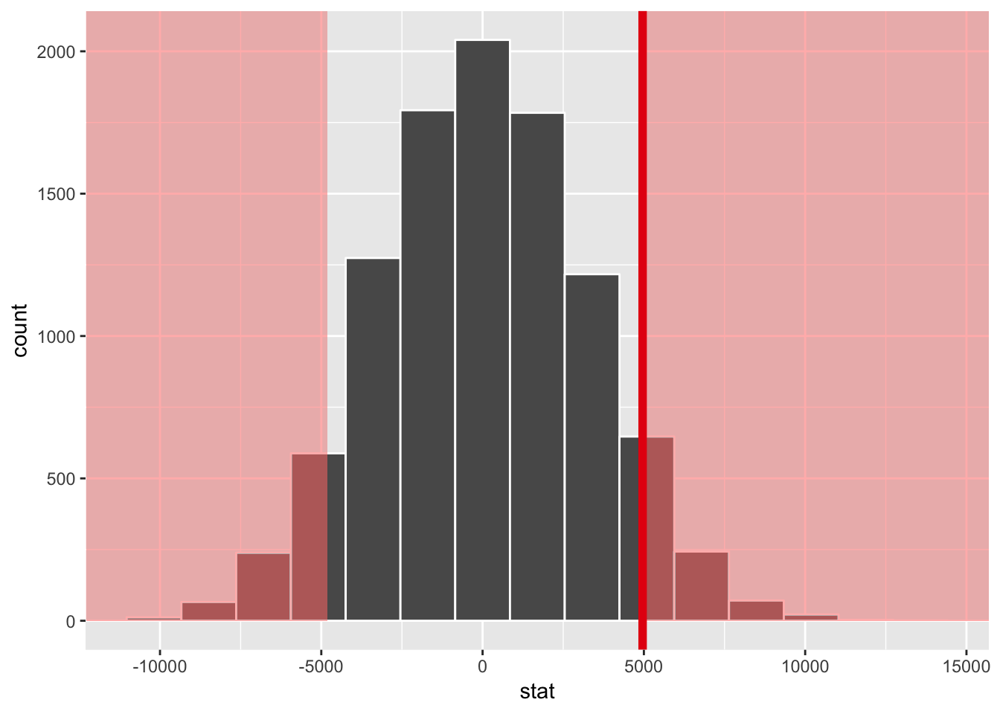

2 Basic Regression
Now that we are equipped with data visualization skills from Chapter ??, data wrangling skills from Chapter ??, and an understanding of the “tidy” data format from Chapter ??, we now proceed with data modeling. The fundamental premise of data modeling is to model the relationship between:
- An outcome variable \(y\), also called a dependent variable and
- An explanatory/predictor variable \(x\), also called an independent variable or covariate.
Another way to state this is using mathematical terminology: we will model the outcome variable \(y\) as a function of the explanatory/predictor variable \(x\). Why do we have two different labels, explanatory and predictor, for the variable \(x\)? That’s because roughly speaking data modeling can be used for two purposes:
- Modeling for prediction: You want to predict an outcome variable \(y\) based on the information contained in a set of predictor variables. You don’t care so much about understanding how all the variables relate and interact, but so long as you can make good predictions about \(y\), you’re fine. For example, if we know many individuals’ risk factors for lung cancer, such as smoking habits and age, can we predict whether or not they will develop lung cancer? Here we wouldn’t care so much about distinguishing the degree to which the different risk factors contribute to lung cancer, but instead only on whether or not they could be put together to make reliable predictions.
- Modeling for explanation: You want to explicitly describe the relationship between an outcome variable \(y\) and a set of explanatory variables, determine the significance of any found relationships, and have measures summarizing these. Continuing our example from above, we would now be interested in describing the individual effects of the different risk factors and quantifying the magnitude of these effects. One reason could be to design an intervention to reduce lung cancer cases in a population, such as targeting smokers of a specific age group with advertisement for smoking cessation programs. In this book, we’ll focus more on this latter purpose.
Data modeling is used in a wide variety of fields, including statistical inference, causal inference, artificial intelligence, and machine learning. There are many techniques for data modeling, such as tree-based models, neural networks/deep learning, and more. However, we’ll focus on one particular technique: linear regression, one of the most commonly-used and easy to understand approaches to modeling. Recall our discussion in Chapter ?? on numerical and categorical variables. Linear regression involves:
- An outcome variable \(y\) that is numerical
- Explanatory variables \(\vec{x}\) that are either numerical or categorical
Whereas there is always only one numerical outcome variable \(y\), we have choices on both the number and the type of explanatory variables \(\vec{x}\) to use. We’re going to cover the following regression scenarios:
- In this chapter, Chapter 2 on basic regression, where we’ll always have only one explanatory variable:
- A single numerical explanatory variable \(x\) in Section @(model1). This scenario is known as simple linear regression.
- A single categorical explanatory variable \(x\) in Section @(model2).
- In the next chapter: Chapter 3 on multiple regression, where we’ll have more than one explanatory variable:
- Two numerical explanatory variables \(x_1\) and \(x_2\) in Section @(model3).
- One numerical and one categorical explanatory variable in Section @(model3). We’ll also introduce interaction models here, there the effect of one explanatory variable depends on the value of another.
We’ll study all 4 of these regression scenarios using real data, all easily accessible via R packages!
Needed packages
In this chapter we introduce a new package, moderndive, that is an accompaniment package to the ModernDive book that includes useful functions for linear regression and other functions and data used in later in the book. Let’s now load all the packages needed for this chapter. If needed, read Section ?? for information on how to install and load R packages.
library(ggplot2)
library(dplyr)
library(moderndive)2.1 One numerical x
Why do some professors and instructors at universities and colleges get high teaching evaluations from students while others don’t? What factors can explain these differences? Are there biases? These are questions that are of interest to univerisity/college administrators, as teaching evaluations are among the many criteria considered in determining which professors and instructors should get promotions. Researchers at the University of Texas in Austin tried to answer this question: what factors can explain differences in instructor’s teaching evaluation scores? To this end, they collected information on n = 463 instructors. A full description of the study can be found at openintro.org.
We’ll keep things simple for now and try to explain differences in instructor evaluations scores as a function of one numerical variable: their “beauty score” which we’ll describe shortly. Could it be that instructors with higher beauty scores also have higher teaching evaluations? Could it be instead that instructors with higher beauty scores tend to have lower teaching evaluations? Or could it be there is no relationship between beauty score and teaching evaluations?
We’ll achieve this by modeling the relationship between these two variables with a particular kind of linear regression called simple linear regression. Simple linear regression is the most basic form of linear regression where we have
- A numerical outcome variable \(y\). In this case their teaching score.
- A single numerical explanatory variable \(x\). In this case their beauty score.
2.1.1 Exploratory data analysis
A crucial step before doing any kind of modeling or analysis however is performing an exploratory data analysis, or EDA, of all our data. Exploratory data analysis can give you a sense of the distribution of data, whether there are outliers and/or missing values, but most importantly it can inform how to build your model. There are many approaches to exploratory data analysis, here are three:
- Most fundamentally: just looking at the raw values, in a spreadsheet for example. While this may seem trivial, many people ignore this crucial step!
- Compute summary statistics likes means, medians, and standard deviations.
- Create data visualizations.
Let’s load the data, select only a subset of 6 of the variables, and look at the raw values. Recall you can look at the raw values by running View(evals) in the console to pop-up the spreadsheet viewer. Here however we present only a snapshot of 5 randomly chosen rows:
load(url("http://www.openintro.org/stat/data/evals.RData"))
evals <- evals %>%
select(score, bty_avg)| score | bty_avg | |
|---|---|---|
| 290 | 3.6 | 6.67 |
| 341 | 4.9 | 3.50 |
| 199 | 3.3 | 2.33 |
| 47 | 4.4 | 4.67 |
| 215 | 4.7 | 3.67 |
While a full description of each of these variables can be found at openintro.org, let’s summarize what each of these variables mean
score: Numerical variable of the average teaching score based on students evaluations between 1 and 5. This is the outcome variable \(y\) of interest.bty_avg: Numerical variable of average “beauty” rating based on a panel of 6 students’ scores between 1 and 10. This is the numerical explanatory variable \(x\) of interest.
Another way to look at the raw values is using the glimpse() function, which gives us a slightly different view of the data. We see that Observations: 463, indicating that there are 463 observations in evals, each correponding to a particular instructor at UT Austin. Expressed differently, each row in the data frame evals corresponds to one of 463 instructors.
glimpse(evals)Observations: 463
Variables: 2
$ score <dbl> 4.7, 4.1, 3.9, 4.8, 4.6, 4.3, 2.8, 4.1, 3.4, 4.5, 3.8, 4.5,...
$ bty_avg <dbl> 5.00, 5.00, 5.00, 5.00, 3.00, 3.00, 3.00, 3.33, 3.33, 3.17,...Since both the outcome variable score and the explanatory variable bty_avg are numerical, we can compute summary statistics about them such as the mean and median. Let’s take evals, then select only the two variables of interest for now, and pipe them into the summary() command which returns: the minimum (smallest) value, the first quartile, the median, the mean (average), the third quartile, and the maximum (largest) value.
evals %>%
summary() score bty_avg
Min. :2.30 Min. :1.67
1st Qu.:3.80 1st Qu.:3.17
Median :4.30 Median :4.33
Mean :4.17 Mean :4.42
3rd Qu.:4.60 3rd Qu.:5.50
Max. :5.00 Max. :8.17 We get an idea of how the values in both variables are distributed. For example, the average teaching score was 4.17 out of 5 whereas the average beauty score was 4.42 out of 10. Furthermore, the middle 50% of teaching scores were between 3.80 and 4.6 (the first and third quartiles) while the middle 50% of beauty scores were between 3.17 and 5.5 out of 10.
The summary() function however only returns what are called univariate summaries i.e. summaries about single variables at a time. Since we are considering the relationship between two numerical variables, it would be nice to have a summary statistic that simultaneously considers both variables. The correlation coefficient is a bivariate summary statistic that fits this bill. Coefficients in general are quantitative expressions of a specific property of a phenomenon. A correlation coefficient is a quantitative expression between -1 and 1 that summarizes the strength of the linear relationship between two numerical variables:
- -1 indicates a perfect negative relationship: as the value of one variable goes up, the value of the other variable goes down.
- 0 indicates no relationship: the values of both variables go up/down independently of each other.
- +1 indicates a perfect positive relationship: as the value of one variable goes up, the value of the other variable goes up as well.
Figure 2.1 gives examples of different correlation coefficient values for hypothetical numerical variables \(x\) and \(y\). We see that while for a correlation coefficient of -0.75 there is still a negative relationship between \(x\) and \(y\), it is not as strong as the negative relationship between \(x\) and \(y\) when the correlation coefficient is -1.

Figure 2.1: Different correlation coefficients
The correlation coefficient is computed using the cor() function, where in this case the inputs to the function are the two numerical variables we want to calculate the correlation coefficient of. Recall from Chapter @(explore-dataframes) that the $ pulls out specific variables from a data frame:
cor(evals$score, evals$bty_avg)[1] 0.187In our case, the correlation coefficient of 0.187 indicates that the relationship between teaching evaluation score and beauty average is “weakly positive.” There is a certain amount of subjectivity in interpreting correlation coefficients, especially those that aren’t close to -1, 0, and 1. For help developing such intuition and more discussion on the correlation coefficient see Section 2.3.1 below.
Let’s now proceed by visualizing this data. Since both the score and bty_avg variables are numerical, a scatterplot is an appropriate graph to visualize this data. Let’s do this using geom_point() and set informative axes labels and title.
ggplot(evals, aes(x = bty_avg, y = score)) +
geom_point() +
labs(x = "Beauty Score", y = "Teaching Score", title = "Relationship of teaching and beauty scores")
Figure 2.2: Instructor evaluation scores at UT Austin
However Figure 2.2 suffers from overplotting. Recall from data visualization Chapter ?? that overplotting occurs when several points are stacked directly on top of each other thereby obscuring the number of points. For example, let’s focus on the 6 points in the top-right of the plot with a beauty score of around 8 out of 10: are there truly only 6 points, or are there many more just stacked on top of each other? You can think of these as ties. Let’s break it up these ties with a little random “jitter” added to the points in Figure 2.3. Jittering adds a little random bump to each of the points to break up these ties. Note that the geom_jitter only alters the visual display of the points; the values in the data frame stay the same.
ggplot(evals, aes(x = bty_avg, y = score)) +
geom_jitter() +
labs(x = "Beauty Score", y = "Teaching Score", title = "Relationship of teaching and beauty scores")
Figure 2.3: Instructor evaluation scores at UT Austin: Jittered
From Figure 2.3 we make several observations:
- Focusing our attention on the top-right of the plot again, we now see that those originally unjittered 6 points actually were actually 12!
- A further interesting trend is that the jittering revealed a large number of instructors with beauty scores of between 3 and 4.5, towards the lower end of the beauty scale.
- Most beauty scores lie between 2 and 8
- Most teaching scores lie between 3 and 5
- Recall our earlier computation of the correlation coefficient which describes the strength of the linear relationship between two numerical variables. Looking at Figure 2.3, it is not immediately apparent that these two variables are positively related. This is to be expected given the positive, but rather weak (close to 0), correlation coefficient of 0.187.
Let’s improve on Figure 2.3 by adding a “regression line” in Figure 2.4. This is easily done by adding a new layer to the ggplot code that created Figure 2.3: + geom_smooth(method="lm"). A regression line is a “best fitting” line in that of all possible lines you could draw on this plot, it is “best” in terms of some mathematical criteria. We discuss the criteria for “best” in Section 2.3.3, but we suggest you read this only after covering the concept of a residual coming up in Chapter 2.1.3.
ggplot(evals, aes(x = bty_avg, y = score)) +
geom_jitter() +
labs(x = "Beauty Score", y = "Teaching Score", title = "Relationship of teaching and beauty scores") +
geom_smooth(method = "lm")
Figure 2.4: Regression line
When viewed on this plot, the regression line is a visual summary of the relationship between two numerical variables, in our case the outcome variable score and the explanatory variable bty_avg. The positive slope of the blue line is consistent with our observed correlation coefficient of 0.187 suggesting that there is a positive relationship between score and bty_avg. We’ll see later however that while the correlation coefficient is not equal to the slope of this line, they always have the same sign: positive or negative.
What are the grey bands surrounding the blue line? These are standard error bands, which can be thought of as error/uncertainty bands. Let’s skip this idea for now and suppress these grey bars for now by adding the argument se=FALSE to geom_smooth(method = "lm"). We’ll introduce standard errors in Chapter ?? on sampling, use them for constructing confidence intervals and conducting hypothesis tests in Chapters ?? and ??, and consider them when we revisit regression in Chapter ??
ggplot(evals, aes(x = bty_avg, y = score)) +
geom_jitter() +
labs(x = "Beauty Score", y = "Teaching Score", title = "Relationship of teaching and beauty scores") +
geom_smooth(method = "lm", se = FALSE)
Figure 2.5: Regression line without error bands
2.1.2 Simple linear regression
If case you’ve forgotten from high school algebra, in general the equation of a line is \(y = a + bx\) which is defined by two coefficients (which we defined earlier as “quantitative expressions of a specific property of a phenomenon):
- the intercept coefficient \(a\), or the value of \(y\) when \(x=0\), and
- the slope coefficient \(b\), or the increase in \(y\) for every increase of one in \(x\)
However, when defining a line specifically for regression, like the blue regression line in Figure 2.5, we use slightly different notation: the equation of the regression line is \(\widehat{y} = b_0 + b_1 x\) where
- the intercept coefficient is \(b_0\), or the value of \(\widehat{y}\) when \(x=0\), and
- the slope coefficient \(b_1\), or the increase in \(\widehat{y}\) for every increase of one in \(x\)
Why do we put a “hat” on top of the \(y\)? It’s a form of notation specific for regression, which we’ll introduce in the next subsection @ref{model1points} when we discuss fitted values. For now, let’s ignore the hat and treat the equation of the line as you would from high school algebra. We know looking at Figure 2.5 that the slope coefficient corresponding to bty_avg should be positive. Why? Because as bty_avg increases, professors tend to roughly have larger teaching evaluation scores. However, what are the specific values of the intercept and slope coefficients? Let’s not worry about computing these by hand, but instead let the computer do the work for us, specifically R!
Let’s get the value of the intercept and slope coefficients by outputting something called the linear regression table. This is always done in a two-step process:
- First “fit” the linear regression model to the
datausing thelm()function.lmstands for “linear model”, given that we are dealing with lines. - Then apply the
get_regression_table()function from themoderndiveR package toscore_model
lm(score ~ bty_avg, data = evals) %>%
get_regression_table(digits = 2)| term | estimate | std_error | statistic | p_value | conf_low | conf_high |
|---|---|---|---|---|---|---|
| intercept | 3.880 | 0.076 | 50.96 | 0 | 3.731 | 4.030 |
| bty_avg | 0.067 | 0.016 | 4.09 | 0 | 0.035 | 0.099 |
Whoa! There is a lot going on, both in terms of the inputs and outputs! Let’s unpack this slowly. First, the lm() function that “fits” the linear regression model is typically used as lm(y ~ x, data = DATA_FRAME_NAME) where:
yis the outcome variable, followed by a tilde~, the key to the left of “1” on your keyboard. In our case,yis set toscore.xis the explanatory variable. In our case,xis set tobty_avg. We call the combinationy ~ xa model formula.DATA_FAME_NAMEis the name of the data frame that contains the variablesyandx. In our case theevalsdata frame.
Then we pipe this output to be the input of the get_regression_table() function, just as when we discussed piping in Section ?? in the data wrangling chapter. An additional arguments to the get_regression_table() function is digits, where we specify the number of significant digits of precision (number of digits after the decimal points) we want the regression table to have. digits defaults to 3, meaning if you don’t specify this argument, digits = 3 is used by default. We’d like to point out that all the get_regression_table() function in the moderndive package does is generate regression table outputs that are clean and easy-to-read while hiding a lot of the code necessary to do so and not much else. This is known as a wrapper function in computer programming, which takes other functions and “wraps” them in a single function. While not necessary to understand regression, if you are curious to know what is going on under the hood of get_regression_table(), see Section 2.3.4 below.
Now let’s consider the outputted regression table, which has two rows denoted by the first column term: one corresponding to the intercept coefficient \(b_0\) and one corresponding to the slope coefficient \(b_1\) for bty_avg. The second column estimate gives us the “fitted” (or computed) values for both these coefficients. Therefore the blue regression line in Figure 2.5 is \(\widehat{\text{score}} = b_0 + b_{\text{bty avg}} \text{bty avg} = 3.88 + 0.067\text{bty avg}\) where
- The intercept coefficient \(b_0\) = 3.88, meaning for instructors that had a hypothetical beauty score of 0, the would on average have a teaching score of 3.88. In this case however, while the intercept has a mathematical interpretation when defining the regression line, there is no practical interpretation since
scoreis an average of a panel of 6 students’ ratings from 1 to 10, abty_avgof 0 would be impossible. Furthermore, no instructors had a beauty score anywhere near 0. - Of more interest is the slope coefficient associated with
bty_avg\(b_{\text{bty avg}}\) = 0.067. This is a numerical quantity that summarizes the relationship between the outcome and explanatory variables. It is interpreted as follows, for every increase of 1 unit inbty_avg, there is an associated increase of on average 0.067 units ofscore. We note in particular that the sign of this slope is positive, suggesting a positive relationship between beauty scores and teaching scores. We are very careful with our wording:- We only stated that there is an associated increase, and not necessarily a causal increase. For example, perhaps its not that beauty directly affects teaching scores, but instead individuals from wealthier backgrounds tends to have had better education and training, and hence have higher teaching scores, but these same individuals also have higher beauty scores. Avoiding such reasoning can be summarized by the adage “correlation is not necessarily causation”. In other words, just because two variables are correlated, it doesn’t mean one directly causes the other. We discuss these ideas more in Section 2.3.2.
- We say that this associated increase is on average 0.067 units of teaching
scoreand not that the associated increase is exactly 0.067 units ofscoreacross all values ofbty_avg. This is because the slope is the average increase across all points as shown by the regression line in Figure 2.5.
- We only stated that there is an associated increase, and not necessarily a causal increase. For example, perhaps its not that beauty directly affects teaching scores, but instead individuals from wealthier backgrounds tends to have had better education and training, and hence have higher teaching scores, but these same individuals also have higher beauty scores. Avoiding such reasoning can be summarized by the adage “correlation is not necessarily causation”. In other words, just because two variables are correlated, it doesn’t mean one directly causes the other. We discuss these ideas more in Section 2.3.2.
But what about the remaining 5 columns: std_error, statistic, p_value, conf_low and conf_high? They give you information on the statistical significance of these results, or their “meaningfulness.” We’ll revisit these in Chapter ?? on (statistical) inference for regression after we’ve covered standard errors in Chapter ?? (std_error), confidence intervals in Chapter ?? (conf_low and conf_high), and hypothesis testing in Chapter ?? (statistic and p_value). For now, we’ll only focus on the term and estimate columns.
2.1.3 Observed/fitted values and residuals
We just saw how to get the value of the intercept and the slope of the regression line from the regression table generated by get_regression_table(). Now instead, say we want information on individual points, in this case one of the n=463 instructors in this dataset, one corresponding to each row of evals.
For example, say we are interested in the 21st instructor in this dataset:
| score | bty_avg |
|---|---|
| 4.9 | 7.33 |
What is the value on the blue line corresponding to this instructors bty_avg of 7.333? In Figure 2.6 we mark three values in particular corresponding to this instructor:
- Red circle: This is the observed value \(y\) = 4.9 and corresponds to this instructors’ actual teaching score.
- Red square: This is the fitted value \(\widehat{y}\) and corresponds to the value on the regression line for \(x\) = 7.333. This value is computed using the intercept and slope in the regression table above: \(\widehat{y} = b_0 + b_1 x\) = 3.88 + 0.067 * 7.333 = 4.369
- Blue arrow: The length of this arrow is the residual and is computed by subtracting the fitted value \(\widehat{y}\) from the observed value \(y\). The residual can be thought of as the error or “lack of fit” of the regression line, In the case of this instructor, it is \(y - \widehat{y}\) = 4.9 - 4.369 = 0.531. In other words, the model was off by 0.531 teaching score units for this instructor.

Figure 2.6: Example of observed value, fitted value, and residual
What if we want both
- the fitted value \(\widehat{y} = b_0 + b_1 \times x\)
- the residual \(y - \widehat{y}\)
not only the 21st instructor but for all 463 instructors in the study? Recall that each instructor corresponds to one of the 463 rows in the evals data frame and also one of the 463 points in regression plot in Figure 2.5. We could repeat the above calculations by hand 463 times, but that would be tedious and time consuming. Instead, let’s use the get_regression_points() function that we’ve included in the moderndive R package. Note that in the table below we only present the results for 21st through 24th instructors.
regression_points <- get_regression_points(score_model)
regression_points| ID | score | bty_avg | score_hat | residual |
|---|---|---|---|---|
| 21 | 4.9 | 7.33 | 4.37 | 0.531 |
| 22 | 4.6 | 7.33 | 4.37 | 0.231 |
| 23 | 4.5 | 7.33 | 4.37 | 0.131 |
| 24 | 4.4 | 5.50 | 4.25 | 0.153 |
Just as with the get_regression_table() function, the inputs to the get_regression_points() function are the same, however the outputs are different. Let’s inspect the individual columns:
- The
scorecolumn represents the observed value of the outcome variable \(y\) - The
bty_avgcolumn represents the values of the explanatory variable \(x\) - The
score_hatcolumn represents the fitted values \(\widehat{y}\) - The
residualcolumn represents the residuals \(y - \widehat{y}\)
Just as we did for the 21st instructor in the evals dataset (in the first row of the table above), let’s repeat the above calculations for the 24th instructor in the evals dataset (in the fourth row of the table above):
score= 4.4 is the observed value \(y\) for this instructor.bty_avg= 5.50 is the value of the explanatory variable \(x\) for this instructor.score_hat= 4.25 = 3.88 + 0.067 * \(x\) = 3.88 + 0.067 * 5.50 is the fitted value \(\widehat{y}\) for this instructor.residual= 0.153 = 4.4 - 4.25 is the value of the residual for this instructor. In other words, the model was off by 0.153 teaching score units for this instructor.
At this point, we suggest you read Section 2.3.3, where we explicity define how a regression line is a “best” fitting line.
2.1.4 Residual analysis
Recall the residuals can be thought of the error or the “lack-of-fit” between the observed value \(y\) and the fitted value \(\widehat{y}\) on the blue regression line in Figure 2.5. Ideally when we fit a regression model, we’d like there to be no systematic pattern to these residuals. We’ll be more specific as to what we mean by no systematic pattern when we see Figure 2.8 below, but let’s keep this notion imprecise for now. Investigating any such patterns is known as residual analysis and is the theme of this section.
We’ll perform our residual analysis in two ways:
- Creating a scatterplot with the residuals on the \(y\)-axis and the original explanatory variable \(x\) on the \(x\)-axis.
- Creating a histogram of the residuals, thereby showing the distribution of the residuals.
First, recall in Figure 2.6 above we created a scatterplot where
- On the y-axis we had the teaching score \(y\)
- On the x-axis we had the beauty score \(x\)
- The blue arrow represented the residual for one particular instructor.
Instead, in Figure 2.7 below, let’s create a scatterplot where
- On the y-axis we have the residual \(y-\widehat{y}\) instead
- On the x-axis we have the beauty score \(x\) as before

Figure 2.7: Plot of residuals over beauty score
You can think of Figure 2.7 as Figure 2.6 but with the blue line flattened out to \(y=0\). Does it seem like there is no systematic pattern to the residuals? This question is rather qualitative and subjective in nature, thus different people may respond with different answers to the above question. However, it can be argued that there isn’t a drastic pattern in the residuals.
Let’s now get a little more precise in our definition of no systematic pattern in the residuals. Ideally, the residuals should behave randomly and
- The residuals should be on average 0. In other words, sometimes the regression model will make a positive error in that \(y - \widehat{y} > 0\), sometimes the regression model will make a negative error in that \(y - \widehat{y} < 0\), but on average the error is 0.
- The value and spread of the residuals should not depend on the value of \(x\).
In Figure 2.8 below, we display some hypothetical examples where there are drastic patterns to the residuals. In Example 1, the value of the residual seems to depend on \(x\): the residuals tend to be positive for small and large values of \(x\) in this range, whereas values of \(x\) more in the middle tend to have negative residuals. In Example 2, while the residuals seem to be on average 0 for each value of \(x\), the spread of the residuals varies for different values of \(x\); this situations is known as heteroskedasticity.

Figure 2.8: Examples of less than ideal residual patterns
The second way to perform a residual analysis is to look at the histogram of the residuals:
ggplot(regression_points, aes(x = residual)) +
geom_histogram(binwidth = 0.25, color = "white") +
labs(x = "Residual")
(#fig:model1_residuals_hist)Histogram of residuals
This histogram seems to indicate that we have more positive residuals than negative. Since residual = \(y-\widehat{y} > 0\) when \(y > \widehat{y}\), it seems our fitted teaching score from the regression model tend to underestimate the true teaching score. This histogram has a slight left-skew in that there is a long tail on the left. Another way to say this is this data exhibit a negative skew. Is this a problem? Again, there is a certain amount of subjectivity in the response. In the authors’ opinion, while there is a slight skew/pattern to the residuals isn’t a large concern. On the other hand, others might disgree with our assessment. Here are examples of an ideal and less than ideal pattern to the residuals when viewed in a histogram:

Figure 2.9: Examples of ideal and less than ideal residual patterns
In fact, we’ll see later on that we would like the residuals to be normally distributed with mean 0. In other words, be bell-shaped and centered at 0! While this requirement and residual analysis in general may some of you as not being overly critical at this point, we’ll see later after when we cover inference for regression in Chapter ?? that for the last five columns of the regression table from earlier (std error, statistic, p_value,conf_low, and conf_high) to have valid interpretations, the above three conditions should roughly hold.
2.1.5 Your Turn
Repeat the above analysis where teaching score is the outcome variable, but now use age as the explanatory variable. Let’s reload the evals dataset and this time select age instead of bty_avg.
load(url("http://www.openintro.org/stat/data/evals.RData"))
evals <- evals %>%
select(score, age)Recall the steps:
- Perform an exploratory data analysis (EDA) by
- Looking at the raw values
- Computing summary statistics of the variables of interest
- Creating informative visualizations
- Fit a linear regression model and get information about the “best-fitting” line from the regression table by using the
get_regression_table()function - Get information on all \(n\) data points AKA all \(n\) rows in the dataset AKA all instructors, in particular the fitted values and the residuals, using the
get_regression_points()function. - Perform a residual analysis and look for any systematic patterns in the residuals. Ideally, there should be little to no pattern.
2.2 One categorical x
It’s an unfortunate truth that life expectancy is not the same across various countries in the world; there are a multitude of factors that are associated with how long people live. International development agencies are very interested in studying these differences in the hope of understanding where governments should allocate resources to address this problem.
In this section, we’ll explore differences in life expectancy in two ways:
- Differences between continents: Are there significant differences in life expectancy, on average, between the five continents of the world: Africa, the Americas, Asia, Europe, and Oceania?
- Differences within continents: How does life expectancy vary within the world’s five continents? For example, is the spread of life expectancy among the countries of Africa larger than the spread of life expectancy among the countries of Asia?
To the end of answering such questions, let’s study the gapminder data frame in the gapminder package. Recall we introduced this dataset in Chapter ?? when we first studied the “Grammar of Graphics”; in particular Figure ??. This dataset has international development statistics such as life expectancy, GDP per capita, and population by country for 5-year intervals between 1952 and 2007. Let’s set our
- Outcome variable \(y\) to be mean life expectancy
lifeExpin 2007 for \(n\) = 142 countries - Explanatory variable \(x\) to be the categorical variable
continent
Let’s load the gapminder data, filter() for only observations in 2007, select() only a subset of the variables, and save this in a data frame gapminder2007.
library(gapminder)
gapminder2007 <- gapminder %>%
filter(year == 2007) %>%
select(country, continent, lifeExp)In this section we’ll explore continent-by-contident differences in the 142 countries life expectancy by continent the country is located in.
We’ll model the relationship between lifeExp and continent using linear regression again, but note that our explanatory variable \(x\) is now categorical, and not numerical like when we covered simple linear regression in Section 2.1:
- A numerical outcome variable \(y\), in this case
lifeExp - A single categorical explanatory variable \(x\), in this case
continent
When the explanatory variable \(x\) is categorical, the concept of a “best-fitting” line is a little different than the one we saw previously in Section 2.1 where the explanatory variable \(x\) was numerical; we’ll study these differences shortly.
2.2.1 Exploratory data analysis
Let’s look at the raw data values both by bringing up RStudio’s spreadsheet viewer, although in Table 2.5 we only show 5 randomly selected countries out of 142, and using the glimpse() function:
View(gapminder2007)| country | continent | lifeExp |
|---|---|---|
| Slovak Republic | Europe | 74.7 |
| Israel | Asia | 80.7 |
| Bulgaria | Europe | 73.0 |
| Tanzania | Africa | 52.5 |
| Myanmar | Asia | 62.1 |
glimpse(gapminder2007)Observations: 142
Variables: 3
$ country <fctr> Afghanistan, Albania, Algeria, Angola, Argentina, Austra...
$ continent <fctr> Asia, Europe, Africa, Africa, Americas, Oceania, Europe,...
$ lifeExp <dbl> 43.8, 76.4, 72.3, 42.7, 75.3, 81.2, 79.8, 75.6, 64.1, 79....We see that the variable continent is indeed categorical, as it is encoded as fctr which stands for “factor”: R’s way of storing categorical variables. Let’s look at a summary of the explanatory variable continent:
summary(gapminder2007$continent) Africa Americas Asia Europe Oceania
52 25 33 30 2 We observe that all continents have 25 countries or more, but Oceania only has two: Australia and New Zealand. Let’s now compute some summary statistics of the outcome variable lifeExp, in particular the worldwide median and mean life expectancy
lifeExp_worldwide <- gapminder2007 %>%
summarize(median = median(lifeExp), mean = mean(lifeExp))| median | mean |
|---|---|
| 71.9 | 67 |
Given that the global median life expectancy is 71.935 half of the world’s countries (71 countries) will have a life expectancy less than 71.935, while half will have a life expectancy greater than this value. The mean life expectancy of 67.007 is lower however. Why are these two values different? Let’s look at a histogram of lifeExp to see why.
ggplot(gapminder2007, aes(x = lifeExp)) +
geom_histogram(binwidth = 5, color = "white") +
labs(x = "Life expectancy", y = "Number of countries", title = "Worldwide life expectancy")
We see that this data is left-skewed/negatively skewed: there are a few countries with very low life expectancies that are bringing down the mean life expectancy. However, the median is less sensitive to the effects of such outliers. Hence the median is greater than the mean in this case. Let’s proceed by comparing median and mean life expectancy between continents by adding a group_by(continent) to the above code:
lifeExp_by_continent <- gapminder2007 %>%
group_by(continent) %>%
summarize(median = median(lifeExp), mean = mean(lifeExp))| continent | median | mean |
|---|---|---|
| Africa | 52.9 | 54.8 |
| Americas | 72.9 | 73.6 |
| Asia | 72.4 | 70.7 |
| Europe | 78.6 | 77.6 |
| Oceania | 80.7 | 80.7 |
We see now that there are differences in life expectancies between the continents. For example focusing on only medians, while the median life expectancy across all \(n\) = 142 countries in 2007 was 71.935, the median life expectancy across the \(n\) =52 countries in Africa was only 52.927.
Let’s create a corresponding visualization. One way to compare the life expectancies of countries in different continents would be via a faceted histogram. Recall we saw back in the Data Visualization chapter, specifically section ??, that facets allow us to split a visualiztion by the different levels of a categorical variable. In Figure 2.10, the varible we facet by is continent, which is categorical with five levels, each corresponding to the five continents of the world.
ggplot(gapminder2007, aes(x = lifeExp)) +
geom_histogram(binwidth = 5, color = "white") +
labs(x = "Life expectancy", y = "Number of countries", title = "Life expectancy by continent") +
facet_wrap(~continent, nrow = 2)
Figure 2.10: Life expectancy in 2007
Another way would be via a geom_boxplot where we map the categorical variable continent to the \(x\)-axis and the different life expectancies within each continent on the \(y\)-axis; we do this in Figure @(catxplot1).
ggplot(gapminder2007, aes(x = continent, y = lifeExp)) +
geom_boxplot() +
labs(x = "Continent", y = "Life expectancy (years)", title = "Life expectancy by continent") 
Figure 2.11: Life expectancy in 2007
Some people prefer comparing a numerical variable between different levels of a categorical variable, in this case comparing life expectancy between different continents, using a boxplot over a faceted histogram as we can make quick comparisons with single horizontal lines. For example, we can see that even the country with the highest life expectancy in Africa is still lower than all countries in Oceania.
It’s important to remember however that the solid lines in the middle of the boxes correspond to the medians (i.e. the middle value) rather than the mean (the average). So for example, if you look at Asia, the solid line denotes the median life expectancy of around 72 years, indicating to us that half of all countries in Asia have a life expectancy below 72 years whereas half of all countries in Asia have a life expectancy above 72 years. Furthermore, note that:
- Africa and Asia have much more spread/variation in life expectancy as indicated by the interquartile range (the height of the boxes).
- Oceania has almost no spread/variation, but this might in large part be due to the fact there are only two countries in Oceania: Australia and New Zealand.
Now, let’s start making comparisons of life expectancy between continents. Let’s use Africa as a baseline for comparsion. Why Africa? Only because it happened to be first alphabetically, we could’ve just as appropriately used the Americas as the baseline for comparison. Using the “eyeball test”, we make the following observations about differences in median life expectancy compared to the baseline of Africa:
- The median life expectancy of the Americas is roughly 20 years greater.
- The median life expectancy of Asia is roughly 20 years greater.
- The median life expectancy of Europe is roughly 25 years greater.
- The median life expectancy of Oceania is roughly 27.8 years greater.
Let’s remember these four differences vs Africa corresponding to the Americas, Asia, Europe, and Oceania: 20, 20, 25, 27.8.
2.2.2 Linear regression
In Section 2.1.2 we introduced simple linear regression, which involves modeling the relationship between a numerical outcome variable \(y\) as a function of a numerical explanatory variable \(x\), in our life expectancy example, we now have a categorical explanatory variable \(x\) continent. While we still can fit a regression model, given our categorical explanatory variable we no longer have a concept of a “best-fitting” line, but differences relative to a baseline for comparison.
Before we fit our regression model, let’s create a table similar to Table 2.7, but
- Report the mean life expectancy for each continent.
- Report the difference in mean life expectancy relative to Africa’s mean life expectancy of 54.806 in the column “mean vs Africa”; this column is simple the “mean” column minus 54.806.
Think back to your observations from the eye-ball test of Figure ?? at the end of the last section. The column “mean vs Africa” is the same idea of comparing a summary statistic to a baseline for comparison, in this case the countries of Africa, but using means instead of medians.
| continent | mean | mean vs Africa |
|---|---|---|
| Africa | 54.8 | 0.0 |
| Americas | 73.6 | 18.8 |
| Asia | 70.7 | 15.9 |
| Europe | 77.6 | 22.8 |
| Oceania | 80.7 | 25.9 |
Now, let’s use the get_regression_table() function we introduced in Section 2.1.2 to obtain the regression table for gapminder2007 analysis:
lifeExp_model <- lm(lifeExp ~ continent, data = gapminder2007)
get_regression_table(lifeExp_model)| term | estimate | std_error | statistic | p_value | conf_low | conf_high |
|---|---|---|---|---|---|---|
| intercept | 54.8 | 1.02 | 53.45 | 0 | 52.8 | 56.8 |
| continentAmericas | 18.8 | 1.80 | 10.45 | 0 | 15.2 | 22.4 |
| continentAsia | 15.9 | 1.65 | 9.68 | 0 | 12.7 | 19.2 |
| continentEurope | 22.8 | 1.70 | 13.47 | 0 | 19.5 | 26.2 |
| continentOceania | 25.9 | 5.33 | 4.86 | 0 | 15.4 | 36.5 |
Just as before, we have the term and estimates columns of interest, but unlike before, we now have 5 rows corresponding to 5 outputs in our table: an intercept like before, but also continentAmericas, continentAsia, continentEurope, and continentOceania. What are these values?
intercept = 54.8corresponds to the mean life expectancy for Africa. This mean life expectancy is treated as a baseline for comparison for the other continents.continentAmericas = 18.8is the difference in mean life expectancies of the Americas minus Africa. Note that 18.80 = 73.6 - 54.8 is the 2nd “mean vs Africa” value in Table 2.8.continentAmericas = 15.9is the difference in mean life expectancy of Asia minus Africa. Note that 15.9 = 70.7 - 54.8 is the 2nd “mean vs Africa” value in Table 2.8.continentEurope = 22.8is the difference in mean life expectancy of Europe minus Africa. Note that 22.8 = 77.6 - 54.8 is the 3rd “mean vs Africa” value in Table 2.8.continentOceania = 25.9is the difference in mean life expectancy of Oceania minus Africa. Note that 25.9 = 80.7 - 54.8 is the 3rd “mean vs Africa” value in Table 2.8.
Let’s generalize this idea a bit. If we fit a linear regression model using a categorical explanatory variable \(x\) that has \(k\) levels, a regression model will return an intercept and \(k-1\) “slope” coefficients. When \(x\) is a numerical explanatory variable the interpretation of a “slope” coefficient, but when \(x\) is categorical the meaning is a little trickier. They are offsets relative to the baseline.
In our case, since there are \(k=5\) continents, the regression model returns an intercept corresponding to the baseline for comparison Africa and \(k-1=4\) slope coefficients corresponding to the Americas, Asia, Europe, and Oceania. Africa was chosen as the baseline by R for no other reason than it is first alphabetically of the 5 continents. You can manually specify which continent to use as baseline instead of the default choice of whichever comes first alphabetically, but we leave that to a more advanced course.
2.2.3 Observed/fitted values and residuals
Recall in Section 2.1.3 when we had a numerical explanatory variable \(x\), we defined:
- Observed values \(y\), or the observed value of the outcome variable
- Fitted values \(\widehat{y}\), or the value on the regression line for a given \(x\) value
- Residuals \(y - \widehat{y}\), or the error between the observed value and the fitted value
What do fitted values \(\widehat{y}\) and residuals \(y - \widehat{y}\) correspond to when the explanatory variable \(x\) is categorical? Let’s investigate these values for the first 10 countries in the gapminder2007 dataset:
| country | continent | lifeExp |
|---|---|---|
| Afghanistan | Asia | 43.8 |
| Albania | Europe | 76.4 |
| Algeria | Africa | 72.3 |
| Angola | Africa | 42.7 |
| Argentina | Americas | 75.3 |
| Australia | Oceania | 81.2 |
| Austria | Europe | 79.8 |
| Bahrain | Asia | 75.6 |
| Bangladesh | Asia | 64.1 |
| Belgium | Europe | 79.4 |
Recall the get_regression_points() function we used in Section 2.1.3 to return the observed value of the outcome variable, all explanatory variables, fitted values, and residuals for all points in the regression. Recall that each “point” in this case corresponds to one of 142 countries in the gapminder2007 dataset. They are also the 142 observations used to construct the boxplots in Figure 2.11.
regression_points <- get_regression_points(lifeExp_model)
regression_points| ID | lifeExp | continent | lifeExp_hat | residual |
|---|---|---|---|---|
| 1 | 43.8 | Asia | 70.7 | -26.900 |
| 2 | 76.4 | Europe | 77.6 | -1.226 |
| 3 | 72.3 | Africa | 54.8 | 17.495 |
| 4 | 42.7 | Africa | 54.8 | -12.075 |
| 5 | 75.3 | Americas | 73.6 | 1.712 |
| 6 | 81.2 | Oceania | 80.7 | 0.515 |
| 7 | 79.8 | Europe | 77.6 | 2.180 |
| 8 | 75.6 | Asia | 70.7 | 4.907 |
| 9 | 64.1 | Asia | 70.7 | -6.666 |
| 10 | 79.4 | Europe | 77.6 | 1.792 |
Notice
- The fitted values
lifeExp_hat\(\widehat{\text{lifeexp}}\). Countries in Africa have the same fitted value of 54.8, which is the mean life expectancy of Africa; countries in Asia have the same fitted value of 70.7, which is the mean life expectancy of Asia; this similarly holds for countries in the Americas, Europe, and Oceania. - The
residualcolumn is simply \(y - \widehat{y}\) =lifeexp - lifeexp_hat. These values can be interpreted as that particular country’s deviation from the mean life expectancy of the respective continent’s mean. For example, the first row of this dataset corresponds to Afghanistan, and the residual of -26.9 = 43.8 - 70.7 is Afghanistan’s mean life expectancy minus the mean life expectancy of all Asian countries.
2.2.4 Residual analysis
Recall our discussion on residuals from Section 2.1.4 where our goal was to investigate whether or not there was a systematic pattern to the residuals, as ideally since residuals can be thought of as error, there should be no such pattern. While there are many ways to do such residual analysis, we focused on two approaches based on visualizations.
- A plot with residuals on the y-axis and the predictor (in this case continent) on the x-axis
- A histogram of all residuals
First, let’s plot the residuals vs continent in Figure 2.12, but also let’s plot all 142 points with a little horizontal random jitter by setting the width = 0.1 parameter in geom_jitter()
ggplot(regression_points, aes(x = continent, y = residual)) +
geom_jitter(width = 0.1) +
labs(x = "Continent", y = "Residual") +
geom_hline(yintercept = 0, col = "blue")
Figure 2.12: Plot of residuals over continent
We observe:
- While not perfectly balanced above and below the line \(y=0\), there seems to be a rough balance of both positive and negative residuals for all 5 continents.
- However, there is one clear outlier in Asia. It has the smallest residual, hence also has the smallest life expectancy in Asia.
Let’s see investigate the 5 countries in Asia with the shortest life expectancy:
gapminder2007 %>%
filter(continent == "Asia") %>%
arrange(lifeExp)| country | continent | lifeExp |
|---|---|---|
| Afghanistan | Asia | 43.8 |
| Iraq | Asia | 59.5 |
| Cambodia | Asia | 59.7 |
| Myanmar | Asia | 62.1 |
| Yemen, Rep. | Asia | 62.7 |
This was the earlier identified residual for Afghanistan of -26.9. Unfortunately given recent geopolitical turmoil, individuals who live in Afghanistan have a drastically lower life expectancy.
Second, let’s look at a histogram of all 142 values of residuals in Figure 2.13. In this case, the residuals form a rather nice bell-shape, although there are a couple of very low and very high values at the tails. As we said previously, searching for patterns in residuals can be somewhat subjective, but ideally we hope there are no “drastic” patterns.
ggplot(regression_points, aes(x = residual)) +
geom_histogram(binwidth = 5, color = "white") +
labs(x = "Residual")
Figure 2.13: Histogram of residuals
2.2.5 Your turn
Repeat this same analysis but using GDP per capita gdpPercap as the outcome variable. Recall the four steps we’ve been following:
- Perform an exploratory data analysis (EDA)
- Fit a linear regression model and get information about the model
- Get information on all \(n\) data points considered in this analysis.
- Perform a residual analysis and look for any systematic patterns in the residuals.
2.3 Other topics
2.3.1 Correlation coefficient
Let’s replot Figure 2.1, but now consider a broader range of correlation coefficient values in Figure 2.14.

Figure 2.14: Different Correlation Coefficients
As we suggested in Chapter 2.1.1, interpreting coefficients that are not close to the extreme values of -1 and 1 can be subjective. To develop your sense of correlation coefficients, we suggest you play the following 80’s-style video game called “Guess the correlation”! Click on the image below:

What if in instead we looked the correlation coefficient between Income and credit card Balance, where Income was in dollars and not thousands of dollars? i.e. we multiply Income by 1000?
library(ISLR)
Credit %>%
select(Balance, Limit, Income) %>%
mutate(Income = Income * 1000) %>%
cor()| Balance | Limit | Income | |
|---|---|---|---|
| Balance | 1.000 | 0.862 | 0.464 |
| Limit | 0.862 | 1.000 | 0.792 |
| Income | 0.464 | 0.792 | 1.000 |
We see it is the same! We say that correlation coefficient is invariant to linear transformations! In other words
- The correlation between \(x\) and \(y\) will be the same as
- The correlation between \(a\times x + b\) and \(y\) where \(a, b\) are numerical values (real numbers in mathematical terms)
2.3.2 Correlation is not necessarily causation
Causation is a tricky problem and frequently takes either carefully designed experiments or methods to control for the effects of potential confounding variables. Both these approaches attempt either to remove all confounding variables or take them into account as best they can, and only focus on the behavior of a outcome variable in the presence of the levels of the other variable(s). Be careful as you read studies to make sure that the writers aren’t falling into this fallacy of correlation implying causation. If you spot one, you may want to send them a link to Spurious Correlations.
2.3.3 Best fitting line
Regression lines are also known as “best fitting lines”. But what do we mean by best? Let’s unpack the criteria that is used by regression to determine best. Recall the plot in Figure 2.6 where for a instructor with a beauty average score of \(x=7.333\)
- The observed value \(y=4.9\) was marked with a red circle
- The fitted value \(\widehat{y} = 4.369\) on the regression line was marked with a red square
- The residual \(y-\widehat{y} = 4.9-4.369 = 0.531\) was the length of the blue arrow.
Let’s do this for another arbitrarily chosen instructor whose beauty score was \(x=2.333\). The residual in this case is \(2.7 - 4.036 = -1.336\).

Let’s do this for another arbitrarily chosen instructor whose beauty score was \(x=3.667\). The residual in this case is \(4.4 - 4.125 = 0.2753\).

Let’s do this for another arbitrarily chosen instructor whose beauty score was \(x=6\). The residual in this case is \(3.8 - 4.28 = -0.4802\).

Now let’s say we repeated this process for all 463 instructors in our dataset. Regression minimizes the sum of all 463 arrow lengths squared. In other words, it minimizes the sum of the squared residuals:
\[ \sum_{i=1}^{n}(y_i - \widehat{y}_i)^2 \]
We square the arrow lengths so that positive and negative deviations of the same amount are treated equally. That’s why alternative names for the simple linear regression line are the least-squares line and the best fitting line. It can be proven via calculus and linear algebra that this line uniquely minimizes the sum of the squared arrow lengths.
For the regression line in the plot, the sum of the squared residuals is 131.879.
2.3.4 How does get_regression_table() work?
2.3.5 Script of R code
An R script file of all R code used in this chapter is available here.